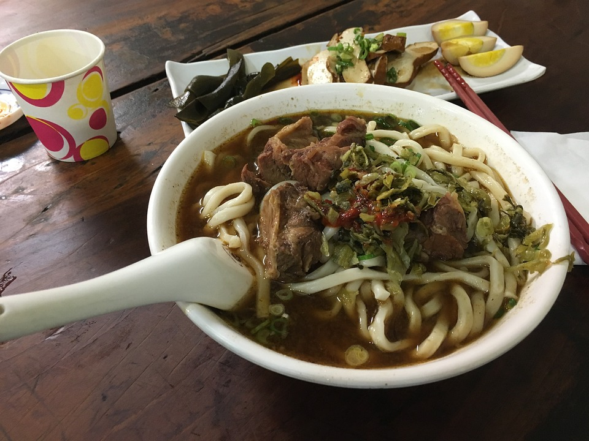

Beef Noodle

Description
Beef noodle is my favorite food. I'm sure you'll like it once you try
it.
Ingredients
- 2 pounds beef stew meat, cut into 1-inch cubes
- 3 tablespoons vegetable oil, or more as needed
- 8 cups water, or more as needed
- 1 (14 ounce) can beef broth
- 1 bunch green onions, cut into 2-inch pieces
- 1 cup soy sauce
- ½ cup rice wine
- ¼ cup brown sugar
- 10 cloves garlic, peeled, or more to taste
- 4 small chile peppers, halved and seeded, or more to taste
- 2 tablespoons chile paste, or to taste
- 1 (1 1/2 inch) piece fresh ginger, peeled and cut into 5 pieces
- 3 star anise pods, or more to taste
- 1 teaspoon five-spice powder
- 4 small heads baby bok choy
- 1 (10 ounce) package udon noodles
- 1 tablespoon chopped pickled mustard greens, or to taste
(Optional)
Steps
- Place beef in a stockpot and cover with water; bring to a boil.
Remove from the heat and drain.
- Pour vegetable oil into a slow cooker; add beef, 8 cups water,
broth, green onions, soy sauce, rice wine, brown sugar, garlic,
chile peppers, chile paste, ginger, star anise, and five-spice
powder. Cover and cook on Low for 8 to 9 hours.
- Transfer beef to a bowl with a slotted spoon. Strain broth into a
bowl; discard solids. Return broth to the slow cooker; keep on Warm
until needed.
- Bring a pot of water to a boil; add bok choy and cook for 30
seconds. Remove with a slotted spoon and run under cold water.
Drain, then roughly chop.
- Add udon noodles to boiling water; cook until tender yet firm to the
bite, about 4 minutes. Drain.
- Divide noodles among serving bowls and top with beef, bok choy, and
hot broth. Garnish with mustard greens